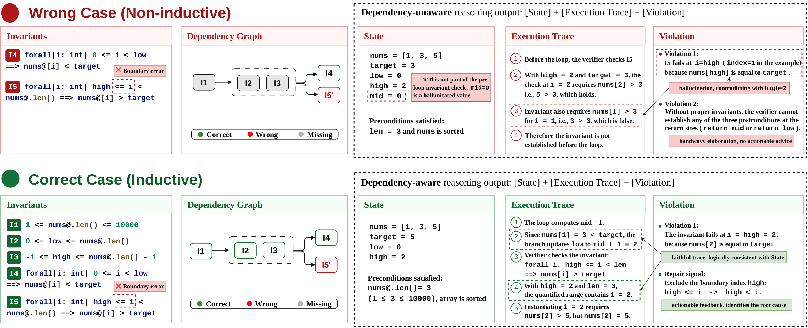
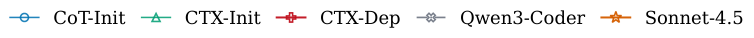
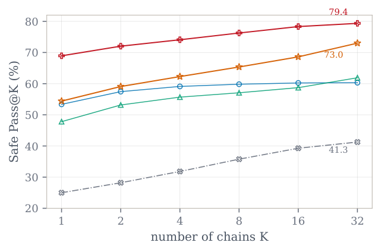
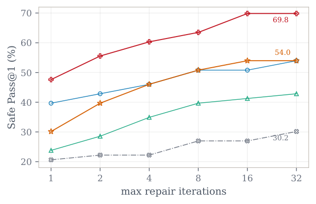

Learn structured diagnostics
A concrete state, execution trace, and violation give the repair policy a source-level explanation of the failed obligation.
Learning to diagnose failed proofs.
Repairing them in dependency order.
Department of Computer Science · University of Chicago
From coarse verifier errors to actionable, source-level diagnostics.
Formal verification provides strong correctness guarantees, but a failed proof often leaves a difficult question: what should change? Language models can attempt a repair, yet pass/fail feedback alone says little about the proof structure they need to build.
TopoVerus trains a QwQ-32B model to generate a structured counterexample, explain the failure, and repair the proof in one trajectory. Its topological graph reward encourages prerequisite invariants to appear before the properties that depend on them.
The resulting repair must pass Verus and a Lynette safety check that preserves executable code and user specifications.
Results reported in the supplied manuscript. Each repair chain uses up to 10 verifier-feedback iterations.
Explore the prerequisite structure behind the curriculum.
I₁: 1 ≤ nums.len() ≤ 10000Start with the array-length fact that supports the index bounds.
Conceptual view of the manuscript’s binary-search example; this is not a live verifier.
A concrete state, execution trace, and violation give the repair policy a source-level explanation of the failed obligation.
Inductiveness tests identify prerequisite relationships. The reward combines invariant coverage with ordering between strongly connected components.
GRPO learns from verifier feedback. A Lynette safety gate assigns zero reward when executable code or specifications are changed.
Binary-search insertion, viewed through the invariant dependency graph.

high <= i to high < i. View original figure (PDF)Safe repair requires both verification success and preserved program semantics.
Reported weighted Safe-Pass@1 / @3 gain over Sonnet-4.5.
| Approach | VerusBench26 problems | DafnyBench17 | HumanEval15 | LeetCode5 | VeriCogen89 | ObfsBench266 | VeruSAGE53 |
|---|---|---|---|---|---|---|---|
| Sonnet-4.5 | 73.1 | 70.6 | 13.3 | 40.0 | 26.7 | 62.0 | 75.5 |
| GPT-4o | 42.3 | 76.5 | 6.7 | 0.0 | 40.4 | 21.8 | 17.0 |
| Qwen3-Coder | 34.6 | 52.9 | 6.7 | 0.0 | 20.0 | 14.3 | 45.3 |
| DeepSeek-V4 | 23.1 | 47.1 | 13.3 | 0.0 | 28.9 | 12.8 | 58.5 |
| AutoVerus | 38.5 | 58.8 | 6.7 | 20.0 | 22.5 | 13.2 | 7.5 |
| CoT-Init | 46.2 | 82.4 | 20.0 | 0.0 | 38.2 | 42.9 | 15.1 |
| CTX-Init | 88.5 | 88.2 | 26.7 | 20.0 | 48.3 | 55.3 | 9.4 |
| CTX-Binary | 88.5 | 94.1 | 26.7 | 20.0 | 44.9 | 58.6 | 24.5 |
| TopoVerus CTX-Dep | 88.5 | 100.0 | 20.0 | 20.0 | 49.4 | 69.9 | 30.2 |
Source: manuscript Table 1. Safe-Pass@3 succeeds if any of three independent repair chains succeeds. TopoVerus is the CTX-Dep variant. Download table data (JSON)
TopoVerus achieves the strongest reported weighted average. Cloud models remain stronger on the systems-level VeruSAGE suite.
On the separate 63-problem validation set, TopoVerus reaches 79.4% Safe-Pass@32 with independent chains and 69.8% Safe-Pass@1 with 32 repair iterations.



Hold the failed proof fixed. Change only the diagnostic source.
On 118 hard failed states, TopoVerus counterexamples improve repair success for three independent repair models compared with CoT-Init diagnostics.
The largest relative gain is 64.3% for DeepSeek-V4; Sonnet-4.5 improves by 24.3%. These diagnostics provide useful repair guidance, but are not independently certified counterexamples.
| Diagnostic source | DeepSeek-V4 | Sonnet-4.5 | Qwen3-Coder |
|---|---|---|---|
| CoT-Init | 11.9 | 31.4 | 13.6 |
| TopoVerus | 19.5 | 39.0 | 15.3 |
Paper, implementation, and model releases will be linked here.
@misc{sun2026topoverus,
title = {Curriculum Proof Repair with Learned Counterexamples},
author = {Yuechun Sun and Jun Yang and Kexin Pei},
year = {2026},
note = {Manuscript},
url = {https://topoverus.github.io/}
}Manuscript citation; the arXiv identifier will be added when available.